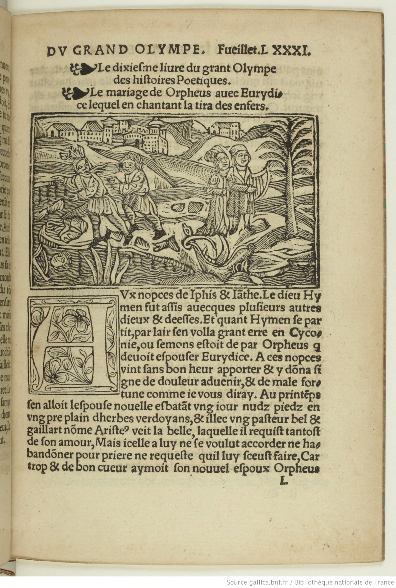

Le grand Olympe des Histoires poëtiques du prince de poësie Ovide Naso en sa Metamorphose
Oeuvre authentique, & de hault artifice, pleine de honneste recreation, Traduyct de latin en françoys
Ovide (0043 av. J.-C.-0017).
Le dixieſme liure du grant Olympe
des hiſtoires Poetiques.
Le mariage de Orpheus auec Eurydi-
ce lequel en chantant la tira des enfers.
AVx nopces de Iphis & Iãthe. Le dieu Hy
men fut aſſis auecques pluſieurs
autres
dieux & deeſſes. Et quant Hymenſe par
tit, par lair ſenvolla grant erre en
Cyco-
nie, ou ſemons eſtoitde par Orpheus զ
deuoit eſpouſer Eurydice. A ces
nopces
vintſans bonheur apporter & y dõnaſi
gne de douleur aduenir,& de male
for-
tune commeie vous diray. Au printẽps
ſen alloit leſpouſe nouelle eſbatã tvng iour nudz
piedz en
vng preplain dherbes verdoyans,&illec vng paſteur bel &
gaillart nõme Ariſte9
veit la belle, laquelle il requiſt tantoſt
de ſon amour,Mais icelle a luy neſe voulut accorder ne
ha-
bandõner pour priere ne requeſte quil luy ſceuſt faire, car
trop & de bon cueur aymoit
ſon nouuel eſpoux Orpheus
ains pour de luy eſchapper ſe miſt a la fuyte & celluy laſuy
uit, mais aĩſi que la
belle Eurydice fuyoit elle marcha
deſſus
vng ſerpẽtvenimeux qui la mordit environ le talon dont elle
mourut. Quant Orpheus
ſceut q ̃par soubdaine deffortune
auoit perdu ſa femme&eſpouſe, il ſe cõplaignit & ſe
doulou
ſa tãt que trop long & trop ennuiable ſeroita le racõpter. Et
quant par le monde
leuſt longuemẽt plouree en enfervoulut
deſcẽdre & allerveoir ſtil pourroit rauoir & recouurer
ſamye
& ſe a ce pourroit mouuoir les infernaulx. Il tenoit ſa harpe
entre ſes bras & en
touchoit les cordes :& de la bouche ſe
print a chanter telle chanſon.
La chanſon de Orpheus aux enfers.
DIeulx infernaulx en tenebres regnans
En la chartre plaine dobſurite
Ouvous eſtes tout le mõde tenans
A ce ſubmiſe eſt toute humanite
Pour eſſaier voſtre crudelite
Et regarder voſtre gouuernemẽt
Pas en ce lieu ne meſuis tranſporte
Eurydice demande ſeulemẽt,
Quant le ſerpent tellemẽt la bleſſa
Quelle mourut & vint auecques vous
Si aſprement mon cueur ſe courroucea
Que ien ſouffry plus que mortel courroux
Ma femme eſtoit ieſtoie ſon eſpoux
Ie viens icy ſuccumbe de tourment
Pour vous offrir vne requeſte a tous
Eurydice demãde ſeulement.
Iadis Pluto Proſerpine rauit
Par feu damours,&ceans la bouta
Mais touteſfois quant voztormens y vit
Point eſbahy ne ſuis ſelle doubta,
Et le ſuis ſeur que ceſte grande doubte a
Mon eſpouſe,ſi vous pry doulcement
Eſcoutez moy,ſe onc homme on eſcouta
Eurydice demande ſeulemẽt.
Quant maintenant vous me la baillerez
Pour demener auec moy train damours
Rien ny perdrez puis que vous la raurez
Finablement, mais quelle ait faist ſon cours
Car tous humains en la fin de leurs iours
Viennent ceans a voſtre iugement
Maisie vous pry que me donnez ſecours
Eurydice demande ſeulement.
ORpheus deuant linfernal manoir,ſi doulcemẽt
chanta que pour la melodieuſete du ſon de
ſa
voix enſemble deſa harpe : les ames triſtes qui
la eſtoiẽt en oublierẽt leurs peines.
Tãtalus en
oublia ſa ſoif, Ixiõ զ pres de luy eſtoit en laiſſa
la roe repoſer. Siſyphus miſtius
la roche qui le trauailloit. Et Ticyus laiſſa a dõner aux voultours ſon giſier
a rongier,& les
Belidiennes laiſſans la fontaine a eſpuiſer mi
rentius leurs cribles. Etſeveritable eſt la renommee զ
ce me
faist acroire & entẽdre, les Eumenidiẽnes զ oyoient la doul
ceur de la harpe
ploroient de Orphe9, ce q̃ oncq̃s parauãt ne-
ſtoit aduenu ne peu aduenir. La royne Proſerpine ne ſe
po-
uoit abſtenir de larmoyer : le roy denfer ne pouoit par nulle
maniere eſcõdire à Orphe9
choſe զlz luy demandaſt. Si fut
Eurydice appellee զ eſtoit en lavalee vmbreuſe auec celles
զ
venues eſtoiẽt nouuellemẽt. Lors apparut Euridice laq̃lle
alloit clochãt p la playe q̃lle
auoit receue ou pied p le ſerpẽt.
Moult fut Orphe9 ioyeulx quãt venir la vit Elle luy fut
ren-
due par tel cõuenãt que il neſe retornaſt ne regardaſt derrie
re luy iuſq̃s a ce q̃lle
fuſt totalemẽt hors des tormẽsĩfernaulx
& զl allaſt deuãt & elle le ſuvuroit derriere ou
autremẽtia
mais nẽ yſtroit. Lors par vng ſentier moult roide & eſtroit
& plaĩ de
tenebreuſe obſcurite & foruoyable chemĩ lũg de-
uant,& lautre apres ſe mirent en la voye Orpheus & ſamve.
Tant cheminerent que ia
eſtoient pres tout dehors du pour-
pris infernal,
quant Orpheus qui damour eſtoit eſpris deſirãt
de veoir ſamye :&doubtant quelle ne leſuyuiſt ſe
retourna
pour elle regarder. Et incõtinẽt elle ſeſuanouyſt deſes yeulx
&ſen retourna en
enfer. Orpheus tendit ſes mains qui rete-
nir la cuida, mais riens ne print forsvent, Et ainſi ſe
partit Eu
rydice de ſon amy&mourut de ſeconde mort, mais de luy
ne ſe peut plaĩdre, fors
de trop aymer. Le dernier ſalut luy rẽ
dit que a peine lentendit Orpheus. Forment ſe plaignoit
de
la ſeconde mort de ſamye,&voulut retourner pour trouuer
la mort, mais la porte trouua
fermee. Et le portier qui la gar-
doit luy retarda ſon chemin & ſi luy diſt q̃ iamais recouurer ne
la pourroit. Quant Orpheus vit que plus entrer
ny pour-
roit,ſur la riue du fleuue infernal fut septiours plourãt pour
la ſeconde mort de
ſamye & pour la perte dicelle,ſans man-
ger & ſans boyre viuoit luy ſoſtenant de ſon dueil.
Moult te-
noit les dieux denfer mauuais & felons qui ſamye ainſi dete
noi ẽ tPuis ſeu
retourna Orpheus&trois ans ſe tint ſans fem
me & ſans chãberiere fuyant toute amour
femenine,&met
tant toutes choſes en refus & en deſdaing, Ce non obſtant
pluſieurs
damoiſelles laymerent qui en luy peu damour cõ
quirent, Cariouyr nen peurent, Il ne les daignoit ouyr
dont
moult de
luy ſe plaignoient.
La deploration du Poete Orpheus
pour auoir perdue ſamye.
DEffus vng tertre en vng champ plain dherbe
verdoyant ou point dumbre nauoit ſaſſiſt
Or-
pheus puis printſa harpe de laquelle il fiſt les
cordes reſonner par grande armonie.
Lorsvin
drent enuiron luy pour le vmbroier arbres de
diuerſes manières qui pourprindrent la
place
quant la doulceur ouyrent du
melodieux ſon. A ceſt aſſem-
blement vindrẽt arbres portans fruitz de diuerſes ſortes cõ-
amãdiers, lauries, neſflies,
corneilliers :&meuries, cheſnes,
freſnes, eſrables peſchiers, geneſtries, ceriſies, pruniers &
aul
tres arbres perdurables de verdeur. Si y vindrent figuiers
:ſa-
pins & les arbres qui le baſme portent. Encore y vindrent oli
uiers, aubeſpins &
pluſieurs aultres arbres portant noix. Le
palme & le pin y furẽt. Cybelle y amena Athys qui fut
mue
en pin & vint auſſi auec luy le cypres qui iadis auoit eſte en
fant & nouuellemẽt
eſtoit mue en vng arbre, moult laymoit
Phebus tandis quil eſtoit vif.
La fin de Orpheusſouuerain harpeur.
PEndant que le poete de Thrace Orphe9
par le doux chãt de ſon harpe armonieu
ſe
delectoit les arbres les beſtes&lespier
res, vecyvenir en grãd multitude les fem
mes de
Thrace que faiſoient les baccha-
nalles,&quãt eurent commencea veoir
Orpheus.Vne delles
toute eſcheueleeva
dire. Vecy le deſpriſeur des femmes. Et
en ce diſant lanca vng dart, mais
pas ne le bleca car le dart
fut retenu par le ſon, laultre luy rua en lieu de dart vne gran
de
pierre, Mais par la doulce melodie du chant cheut celle
pierre deuant les piedzOrpheus ainsi cõe pour
ſe humilier
& mercy prier. Adonc doubla la forcenerie des faulces fem-
mes plaines de ire,
quant elles virent les pierres reſſortir par
la doulceur de ſon inſtrument. Lors firẽt entre elles
crieries
& noiſes & ſonnerent buccines pour amortir & amoindrir
le ſon de la
melodie de ſon harpe, affin que riens ne le ouyſt, qui ſen peuſt eſmouuoir tãt que on ne euſt peu ouyr
tõner.
Puis luy getterent eſpeſfemẽt pierres qui premieres du ſang
du Poete rougirẽt, car de riens
ne le deporterent puis que le
doulx
chant de ſa harpe plus ne ouyrent, ains luy firent du
pis quelles
peurent,ſicomme celles qui le hayoient mortel-
lement,& qui auoient les cueurs plains dire &
denuie. Oy-
ſeaulx,ſerpens,&ſauluaigine laiſſerẽt Orpheus ſeul qui na
gueres enuiron luy
auoitattraist & aſſemble, Celles qui gre
uer le vouloient le raſſaillirent & abbatirent, Et
ſans mercy
les deſuoyees retournerent legierement vers le Poete զ ten-
doit les bras en criant
mercy ſe aulcũ fuſt qui le ouyſt, mais
pour riens quil diſt il ne pouuoit eſmouuoir les folles a ce
q̃
pitiene mercy euſſent de luy, ains le meuldrirent & tuerent
a leur grand reproche. Haa
dieu par celle bouche ouye,
des
pierres entendue, des cueurs des beſtes yſſit lame du corps.
Pour luy pleurerẽt les
Nymphes զ le congnoiſſoient. Auſſi
oyſeaux deſplumez de leurs plumes, & les arbres de
leurs
fueilles firẽtſigne de dueil pour lamour du poete. Et les fleu
uesſen
douloient,&tant pleurerent quilzen tarirẽt&ſeiche
rent en pluſieurs lieux. Ses membres furent
en diuers lieux
eſpars. Hebr9le fleuue de Thrace receut la teſte & la lãgue,
qui gestoit
vng pleurãt plainst.& la mer dõnoitla murmu-
re en elle plaignãt dicelle iniure, les riuieres du
fleuue reſon
nerẽt par leurs reſpõs. Le chief & la lire floterẽt tant q̃ en par
fonde mer
paruindrent. Deſſus lherbe yſſit de la riuiere vne
merueilleuſe ſerpẽte,զ trouua le chief du diuin
poete giſant
a la riue. Si ſaſſiſt deſſus la gueulle bee & manger le cuyda,
mais Phebus
ſans demeurãce voulut le chief deſon filz reſ
courre.&ainſi que la ſerpente le voulut deuorer,
Phebus la
mua en dure pierre de telle forme & de telle laideur comme
par deuant ſa muance
eſtoit. Lame de Orpheus deſcendit en
Enfer ſans demeurance ou il vit la vallee tenebreuſe & les
re
gnes q parauãt auoit veuz. Biẽ recõgneut les dieux & la pi-
teuſe cõpaignie զ la
eſtoit,&ſi y trouua ſon eſpouſe զ l auoit
deſiree longuement,ſi lẽbraſſa amiablement,&la regarda
ſeur & ſans doubte de
condition griefue,